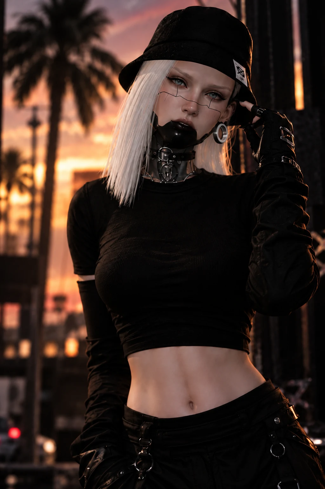
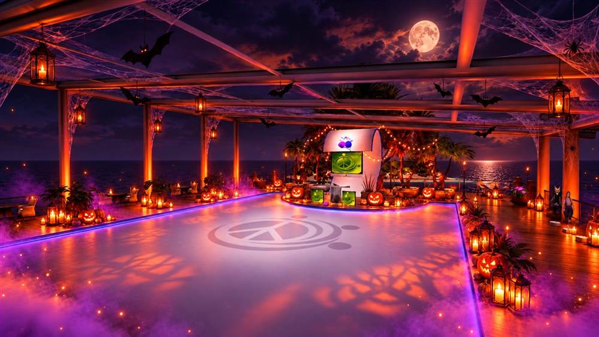

TECH
HOUSE
Driving basslines, tight grooves and club-focused energy.
SECOND LIFE DJ • BRAZIL
BASS HOUSE · TECH HOUSE · AFRO HOUSE
NOT JUST A DJ.
AN EXPERIENCE.
01 / THE ARTIST
DJ ZRØ is more than a name behind the decks. The avatar, the attitude and the visual identity are part of the experience.
A cinematic portrait collection dedicated to the artist beyond the dancefloor.

OFFICIAL PORTRAIT
Visual identity, presence and attitude — captured away from the club.
02 / THE ZRØ SOUND
THREE LANES. ONE IDENTITY.
Driving basslines, tight grooves and club-focused energy.
Heavy drops, attitude and high-impact moments.
Percussion, atmosphere and movement with a deeper pulse.
03 / DJ MIXES
Get a taste of the ZRØ experience.
SOUNDCLOUD / RECORDED SETS
BASS HOUSE · TECH HOUSE · SOUNDCLOUD
ELECTRO HOUSE · CLUB · SOUNDCLOUD
DJ SET · SECOND LIFE · SOUNDCLOUD
04 / SPECIAL EVENT

DJ ZRØ / 31.10.26ONE NIGHT ONLY · SECOND LIFE
Uma noite especial com o DJ ZRØ na Ilha Brasil Ajuda — batidas escuras, energia de pista e uma atmosfera que só acontece uma vez por ano.
05 / SL GALLERY
SECOND LIFE / DJ ZRØ
A visual archive of DJ ZRØ performances, clubs and nights across Second Life.
06 / AGENDA
SECOND LIFE / SEPTEMBER 2026
Schedule updated from the current September 2026 DJ ZRØ calendar. Times shown in SLT.
07 / BOOK ZRØ
Bring ZRØ to your next night. Available for residencies, guest sets, special events and collaborations in Second Life.
08 / PRESS KIT